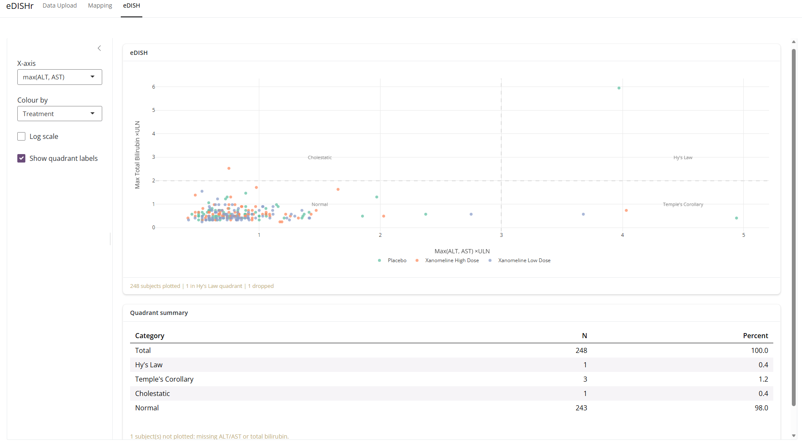

eDISHr is an interactive hepatic safety exploration tool designed to support safety analyses by providing a clear and intuitive view of liver-related laboratory findings across a study population. The app enables teams to rapidly identify participants with clinically relevant liver signal patterns and explore how these findings evolve over time. By combining liver enzyme and bilirubin measurements in a dynamic visual environment, eDISHr helps detect potential safety concerns and assess their clinical context. Users can investigate whether hepatic signals are concentrated within specific treatment groups or occur more frequently in pre-specified subgroups. The application also facilitates deeper exploration of associated factors by linking laboratory findings with adverse events, concomitant medications, and relevant medical history. Interactive filtering and drill-down functionalities allow users to select individual patients and explore their data in a dedicated patient-profile section, making it easy to move from population-level trends to individual participant profiles. This wider patient-profile context adds valuable perspective to the evaluation of hepatic safety signals, allowing study teams to assess findings efficiently, generate hypotheses, and focus discussions on the most meaningful signals. By bringing key safety data together in a single visual workspace, eDISHr supports informed decision-making and comprehensive liver safety assessment throughout clinical development.